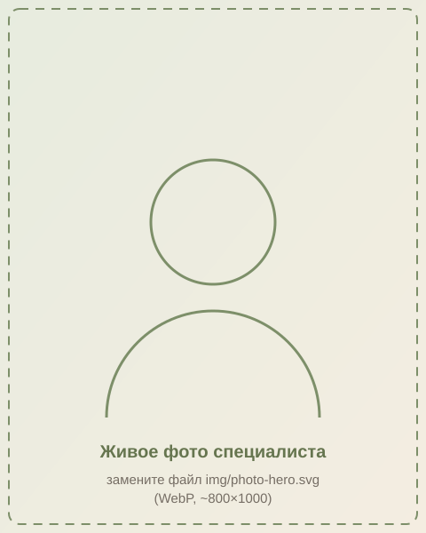
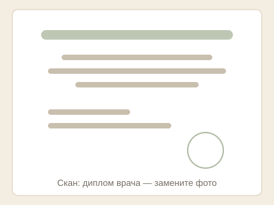
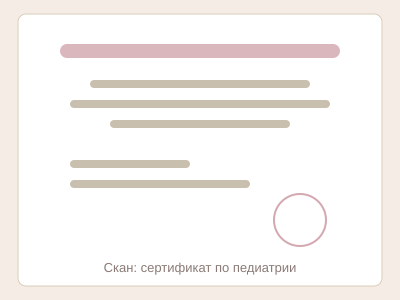
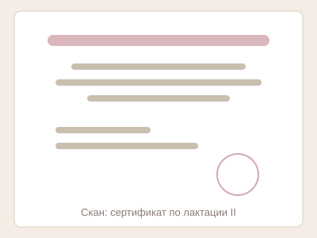

Консультант по грудному вскармливанию в Гатчине, Ломоносове и Санкт-Петербурге
Врач-педиатр, мама с личным опытом кормления. Помогу наладить грудное вскармливание — онлайн из любого города и с выездом на дом.
- Врач-педиатр, стаж [N] лет
- Профпереподготовка по лактации
- [N] лет собственного опыта ГВ

Я сама мама — и знаю эту дорогу изнутри
Меня зовут [Имя Фамилия]. Я врач-педиатр со стажем [N] лет, консультант по грудному вскармливанию и мама [кол-во] детей — суммарно [N] лет грудного кормления на своём опыте.
Знаете, что меня удивило, когда я сама стала мамой? Что даже врачу с дипломом бывает страшно и непонятно. С [первым] ребёнком я столкнулась с [лактостазом / трещинами] и поймала себя на мысли: если мне, врачу, было так тяжело, что же переживают мамы без медицинского образования?
Тогда я прошла профессиональное обучение по лактации ([название программы, часы]) и начала помогать мамам. Сегодня консультации проходят онлайн — из любого города, и с выездом на дом: Гатчина, Ломоносов, Санкт-Петербург.
- [N]лет в педиатрии
- [часы]часов обучения по лактации
- [N]лет собственного опыта ГВ
Документы — в открытом доступе
Кликните по документу, чтобы открыть его в полном размере.



Услуги и цены
| Услуга | Что входит | Цена |
|---|---|---|
| Онлайн-консультация, 60 мин | Видеозвонок, осмотр прикладывания, план действий, 7 дней поддержки в чате | 3000–3500 ₽ |
| Выезд на дом: Гатчина, Коммунар, Тайцы | Визит 1,5–2 часа, практическая помощь здесь и сейчас | 3000 ₽ |
| Выезд на дом: Ломоносов, Лебяжье, Большая Ижора | То же | 3500 ₽ |
| Выезд на дом: Санкт-Петербург | То же | 4000 ₽ |
| Срочный выезд в день обращения | Наценка к базовой ставке | +500 ₽ |
Если нужна не консультация, а врач — честно скажу и помогу найти.
Как проходит консультация
-
Вы пишете — отвечаю в течение часа в рабочее время (8:00–21:00), задаю 2–3 уточняющих вопроса.
-
Встречаемся онлайн или я приезжаю. Смотрим кормление, разбираем историю, составляем план.
-
7 дней после консультации я на связи в чате — корректируем план без доплаты.
Куда приезжаю
- Гатчина
- Коммунар
- Тайцы
- Сиверская
- Вырица
- Ломоносов
- Лебяжье
- Большая Ижора
- Аннино
- Петергоф
- Стрельна
- Красное Село
- Санкт-Петербург
Онлайн-консультации — из любого города.
Не нашли свой город? Напишите — обсудим онлайн или выезд.
Отзывы
«[Текст реального отзыва: что было до консультации, что изменилось после]»
Мария, мама Мирона, 2 месяца
«[Текст реального отзыва]»
[Имя], мама [имя ребёнка], [возраст]
«[Текст реального отзыва]»
[Имя], мама [имя ребёнка], [возраст]
Частые вопросы
Консультация — это медицинская услуга?
Нет: консультация носит информационно-консультационный характер. Если я вижу симптомы, требующие осмотра и лечения врача, — прямо скажу об этом и направлю к доктору.
Что подготовить к онлайн-консультации?
Взвесить ребёнка и приготовить 10 минут наблюдения за кормлением — этого достаточно для разбора ситуации.
Помогаете, если ребёнок на смешанном вскармливании?
Да, включая составление плана возврата к полноценному грудному вскармливанию.
Сколько длится выезд?
1,5–2 часа: этого хватает на наблюдение за кормлением, разбор истории и практическую помощь.
Что если не получится наладить ГВ?
Честно скажу и предложу комфортный план докорма — здоровье мамы и ребёнка важнее «идеального» результата.
Как оплатить?
Перевод самозанятой, чек приходит автоматически.